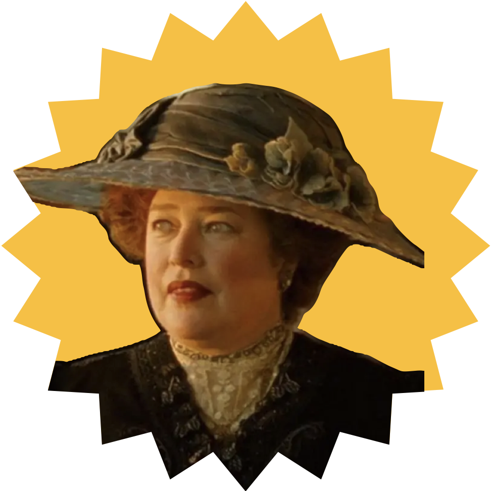
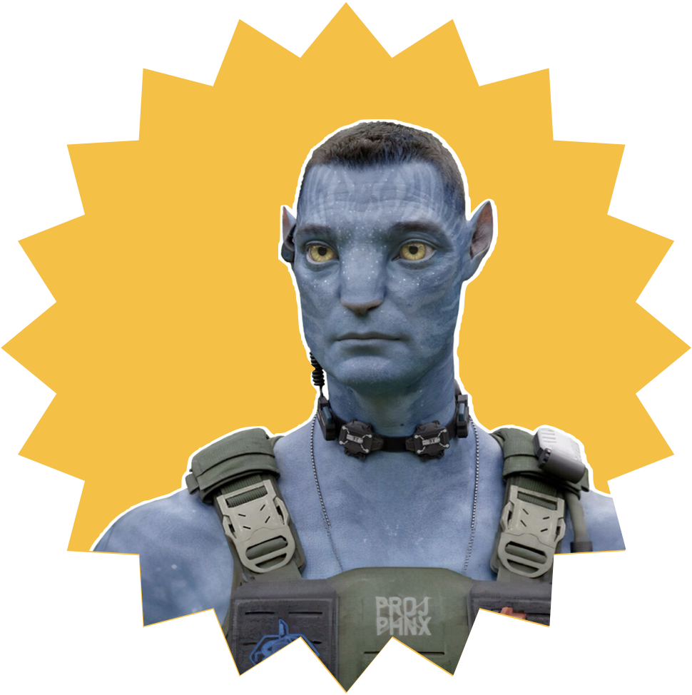
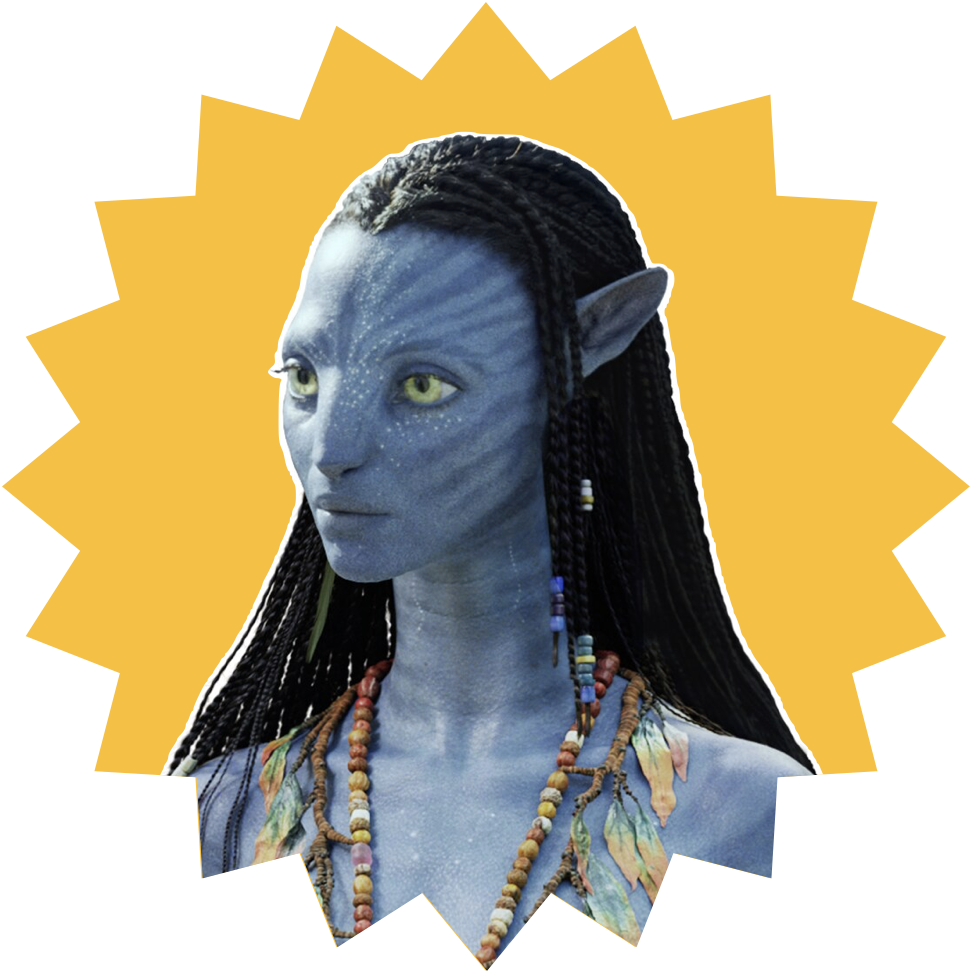
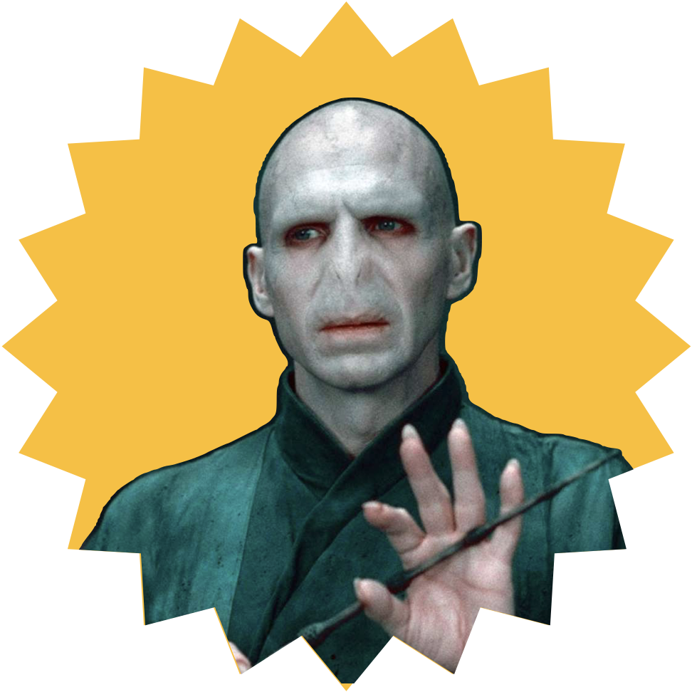
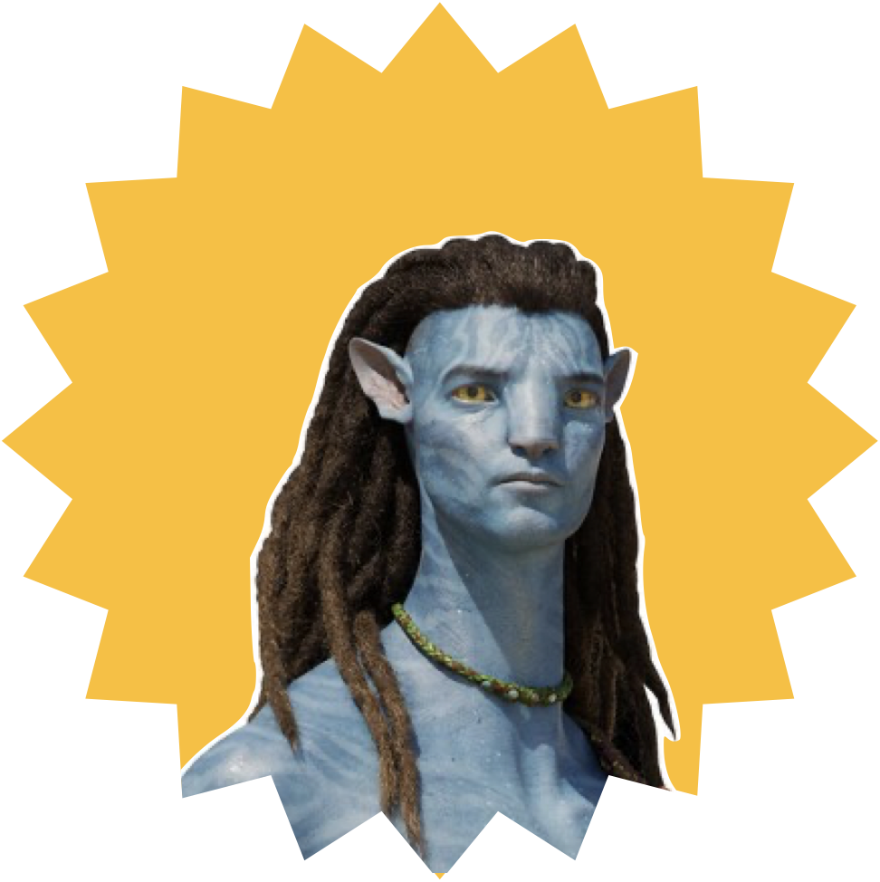
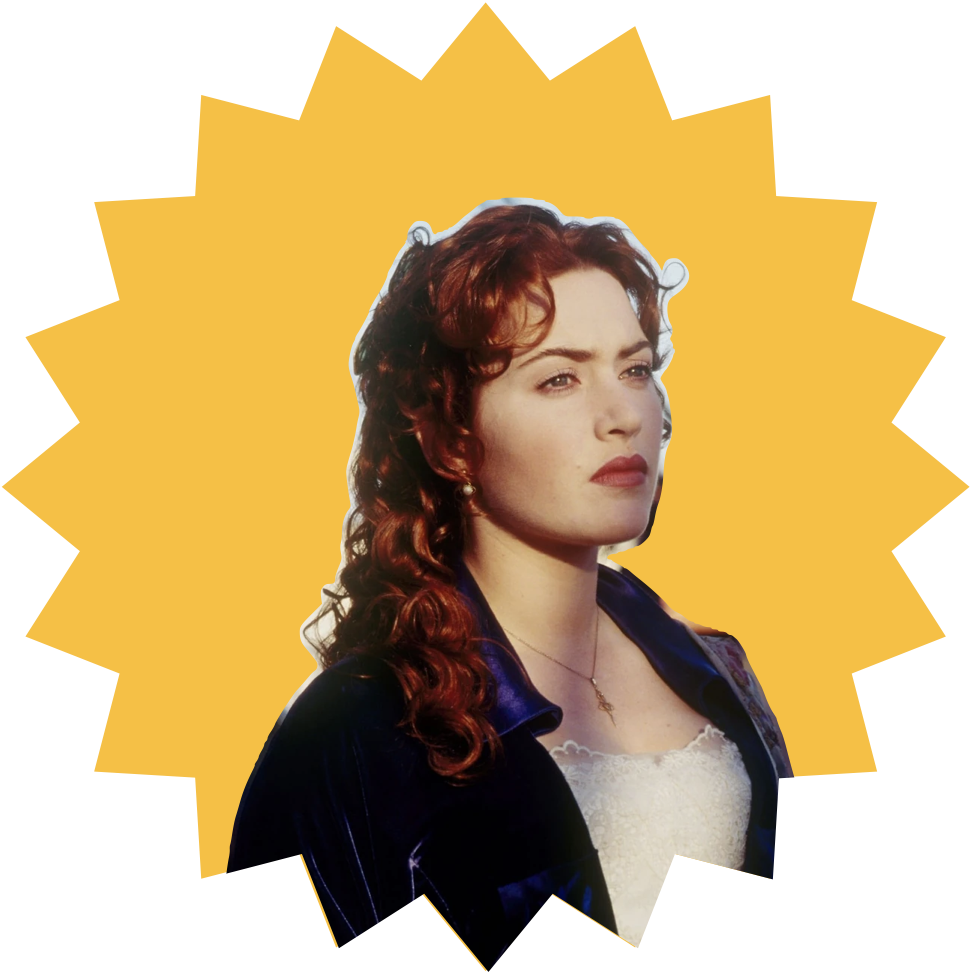
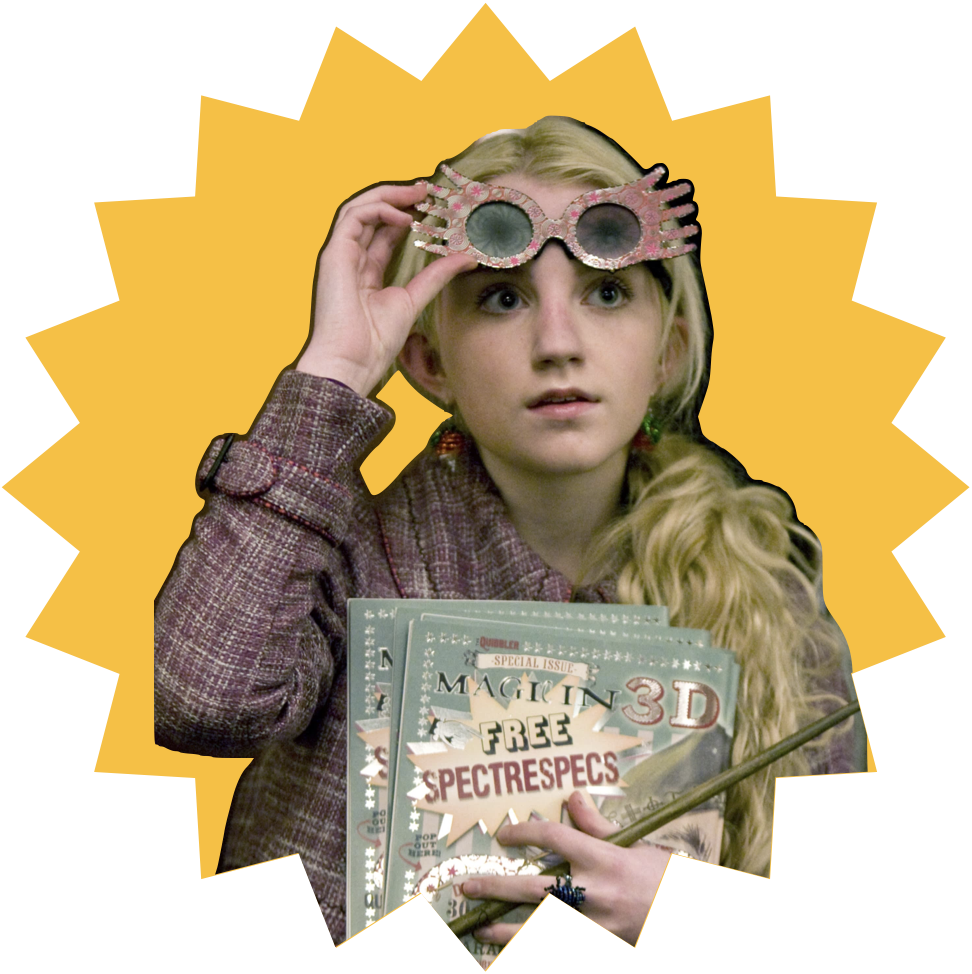
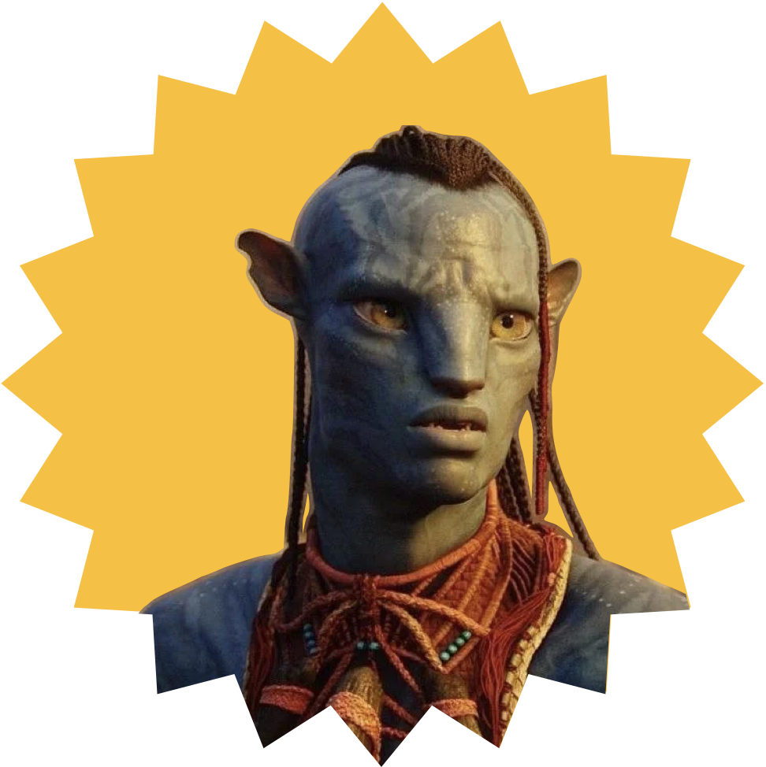
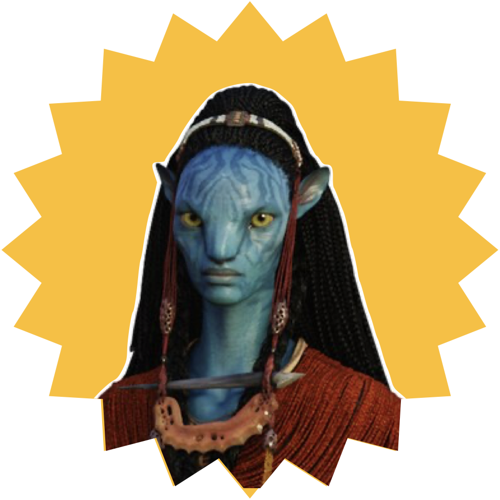

Added Information
Here you can find additional information about the processing we used for our analysis.
Different MBTI Types
| Type | Personality Description | Most Grossing Character | Image |
|---|---|---|---|
| ESTP | Smart, energetic and very perceptive people, who truly enjoy living on the edge. | Lyle Wainfleet from Avatar | |
| ESFP | Spontaneous, energetic and enthusiastic people - life is never boring around them. | Jack Dawson from Titanic | |
| ENFP | Enthusiastic, creative and sociable free spirits, who can always find a reason to smile. | First Officer William McMaster Murdoch form Titanic | |
| ENTP | Smart and curious thinkers who cannot resist an intellectual challenge. | Molly Brown from Titanic |  |
| ESTJ | Excellent Administrators, unsurpassed at managing things or people. | Colonel Quaritch from Avatar |  |
| ENFJ | Quiet and mystical, yet very inspiring and tireless idealists. | Neytiri from Avatar |  |
| ENTJ | Bold, imaginative and strong leader, always finding a way - or making one. | Voldemort from Harry Potter |  |
| ISTP | Bold and practical experimenters, masters of all kinds of tools. | Jake Sully from Avatar |  |
| ISFP | Flexible and charming artists, always ready to explore and experience something new. | Rose Dewitt Bukater from Titanic |  |
| INFP | Poetic, kind and altruistic people, always eager to help a good cause. | Luna Lovegood from Harry Potter |  |
| INTP | Innovative inventors with an unquenchable thirst for knowledge. | Grace Augustine from Avatar | |
| ISTJ | Practical and fact-minded individuals, whos reliability cannot be doubted. | Tsu'tey from Avatar |  |
| INFJ | Quiet and mystical, yet very inspiring and tireless idealists. | Mo'at from Avatar |  |
| INTJ | Imaginative and strategic thinkers, with a plan for everything. | Oppenheimer from Oppenheimer |  |
If you want to learn more about the the character types and the resources used on this page click here.
VADER Technique
Your new section content goes here...
LDA Technique
Your new section content goes here...